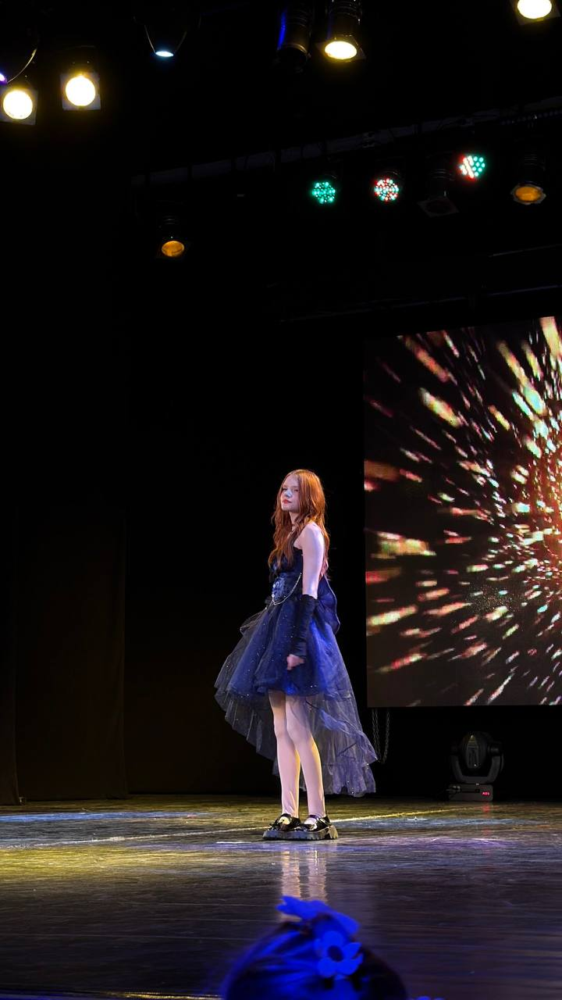

Самым важным женщинам в моей жизни
Это письмо не для одной — для обеих. Каждая заслуживает своих слов, и я хочу, чтобы вы обе это почувствовали.

Анастасия
С тобой обычные дни перестали быть обычными. Мне нравится, как ты смеёшься, когда не пытаешься сдерживаться, когда смеёшься как лошадь при моих выкидышах, которые почему то ты назвала шутками.
Хоть ты и не рядом – ты то, ради чего я хочу быть лучше. Спасибо, что позволяешь мне быть настоящим с тобой, без масок и без спешки.
Тамила
Вы – женщина, что в самом расцвете своей жизни, имеете красоту несравнимую ни с кем, которая вызывает у меня неистовое восхищение, и чтобы вы знали: Вас любят, вас ценят, вас уважают, и я отношусь именно к этим людям.
Меня восхищают ваши достижения, ибо имея столько достижений в сфере образования вы по настоящему талантливая и целеустремлённая женщина. Спасибо вам за это – и за все ваши старания, вы большая молодец.
Пусть эта открытка станет маленьким напоминанием: вы обе – самые важные для меня 2 человека, которых я люблю и уважаю.